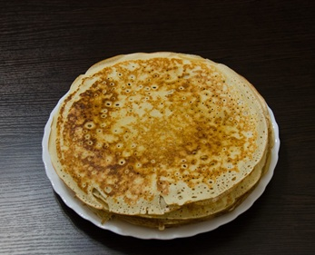

Palačinka

Zutaten
250 g Mehl 2 Eier 500 ml Milch 2 EL Zucker 1 Prise Salz 1 TL Vanillezucker (optional) 2 EL Öl (plus etwas mehr zum Braten) 1 TL Backpulver (optional, für fluffigere Palačinka)Zubereitung
Teig vorbereitenIn einer großen Schüssel das Mehl, Zucker, Salz und Vanillezucker (falls verwendet) vermischen. Die Eier hinzufügen und gut verrühren. Nach und nach die Milch einfließen lassen und dabei ständig rühren, um Klumpen zu vermeiden. Öl und optional das Backpulver hinzufügen und gut vermengen, bis der Teig glatt und dünnflüssig ist.
Palačinka braten:Eine beschichtete Pfanne auf mittlerer Hitze erhitzen und leicht mit Öl einpinseln. Eine kleine Kelle Teig in die Pfanne geben und durch Schwenken gleichmässig verteilen, sodass der Teig die gesamte Pfanne dünn bedeckt. Den Palačinka etwa 1–2 Minuten braten, bis die Unterseite goldbraun ist, dann vorsichtig wenden und die andere Seite ebenfalls goldbraun braten. Den Palačinka aus der Pfanne nehmen und auf einem Teller ablegen. Mit den restlichen Teigzutaten fortfahren.
Servieren:Die Palačinke nach Belieben füllen: Du kannst Marmelade, Nutella, Sahne, Obst oder Zimt und Zucker verwenden. Die Palačinke können auch zu einer Rolle gefaltet oder einfach gefaltet serviert werden.